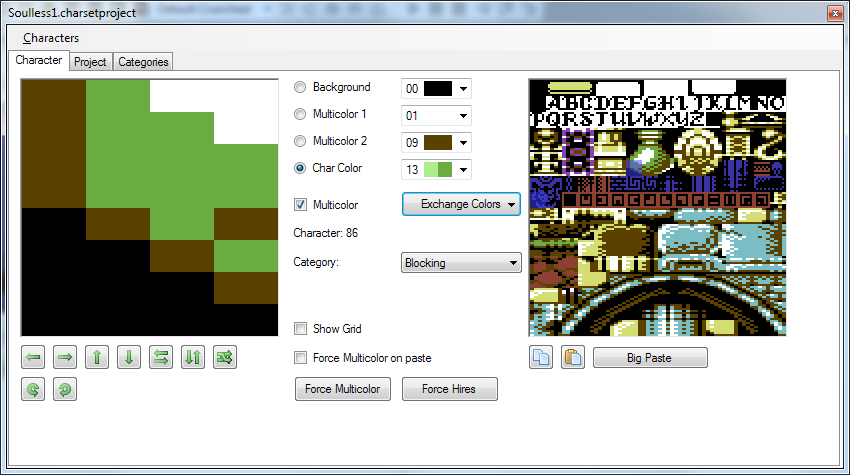
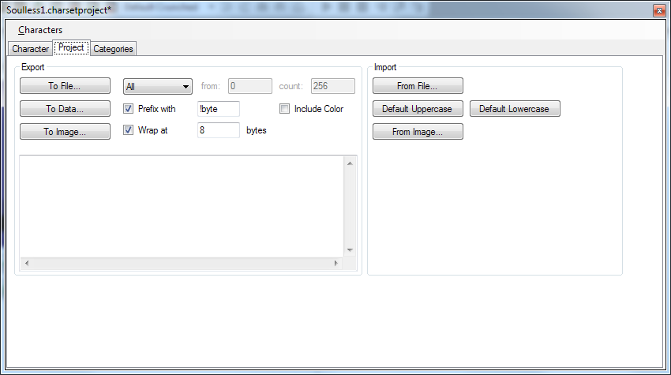
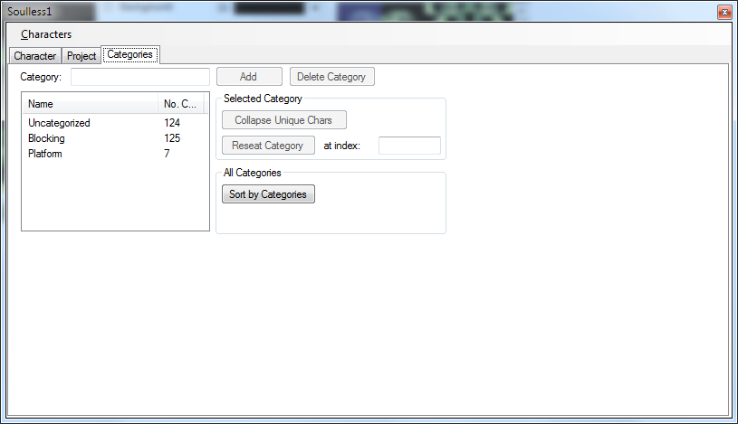

Character Set Editor - Editor Pane
The character set editor supports editing a set of up to 256 characters. Both single color and multi color are supported. Characters can be
directly modified, flipped horizontally and vertically as well as copied and pasted to/from the clipboard.

Selection
You can select a single char by left clicking, a range by shift-left clicking or a rectangular selection by alt-left clicking. If copied and pasted from the clipboard the copied selection style will matter when inserting.
Copy to Clipboard
The selected character is written to the clipboard as 8x8 sized 8 bit indexed image files where the first 16 colors are set in the palette.
Inside C64 Studio the actual selection is put on the clipboard.
Paste from Clipboard
A character is pasted from the clipboard, the image is expected to be 8 bit index and have a size of 8x8 pixel.
Pasting an image also will try to map to the currently set multi color colors. If the pasted image does not meet the expectations (eg. too many colors) the
paste will be skipped.
Big Paste
Like wise any images from the clipboard are expected to be 8 bit indexed.
Pasting an image also will try to map to the currently set multi color colors. If the pasted image does not meet the expectations (eg. too many colors) the
paste will be skipped.
Exchange colors
Pops up a menu where multicolors can be exchanged with each other or the background color. The exchange is done for the whole charset and also affects the multi color settings.
Force multicolor on paste
This setting affects pasting from clipboard. If checked and a pasted character looks the same as single and multi color (e.g. one of the multi color is blue) the preference is to use multi color.
Force Multicolor
Forces all characters to be flagged as multicolor.
Force Hires
Forces all characters to be flagged as single color.
Category
Displays/Sets the category of a character, useful for the category pane.
Show grid
Toggles a grid display on the character editor window.
Character Set Editor - Project Pane
On the project pane several import/export functions are available.

Export to file
Exports the chosen range of characters to a binary file.
Export to data
Exports the binary data of the chosen characters to text. The fields Prefix with and wrap are used to build the resulting text.
Export to image
Exports the chosen characters ordered in a 16x16 grid as an PNG image.
Import from file
Imports characters from a binary file.
Default Uppercase
Sets the default ROM uppercase characters.
Default Lowercase
Sets the default ROM uppercase characters.
Import from image
Imports characters from an image. The image file is expected to to be 8 bit index and have a size of a multiple of 8 horizontally and 8 vertically.
Character Set Editor - Categories Pane
Categories can be used to order characters. Categories have no actual function in the editor beside helping in managing characters.

Add
Adds a new category.
Delete Category
Deletes the currently selected category. Characters selected into that category are reset to uncategorized.
Collapse Duplicates
Detects duplicate characters inside the current category and collapses them.
Reseat Category
Resorts characters so all characters of the selected category are arranged starting with the entered index.
Sort by Categories
Resorts characters so all characters of a category are behind each other.